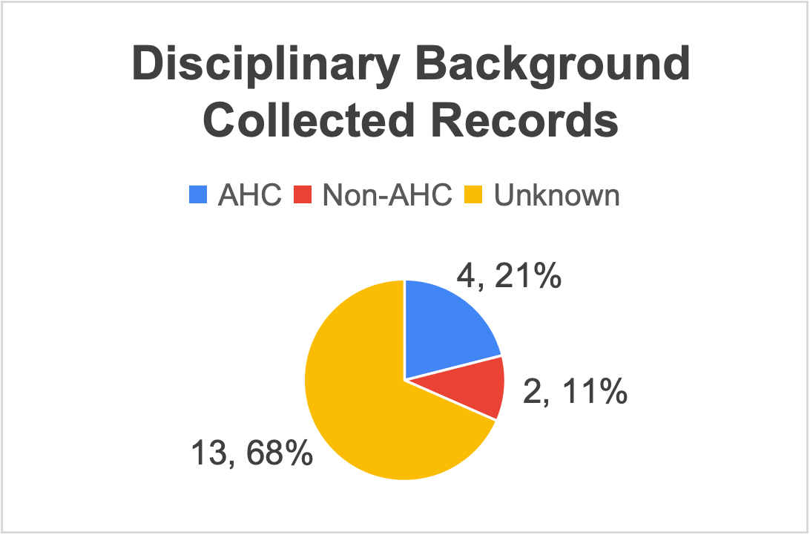

Digital Practices Portfolio
This section documents my learning, practical activities and reflections from the Digital Practices module.
Weekly Reflections
Week 2: Building My Website
I created my personal website using GitHub Pages and a template provided by the tutor. I changed the website title and learned to adjust fonts and colours. One challenge was making formatting mistakes when editing HTML and CSS code.
Week 4: Data Collection
Our group investigated differences in AI use experiences between Arts and Humanities students and students from other disciplines. We collected online opinions from different platforms. A major challenge was that many users did not disclose their academic disciplines, making comparisons difficult.
Data Visualisation

Among the 19 collected records, 4 were classified as AHC, 2 as Non-AHC, and 13 as Unknown. This highlights the difficulty of identifying students' academic backgrounds from online sources.
Week 5: Data Visualisation
I practised web scraping using the BBC iPlayer website and organised the collected programme titles into categories. I then used WPS Spreadsheets to create a bar chart comparing the number of programmes in each selected category.